2022
Face Recognition and Adversarial Masking Techniques
Published at the 3rd International Conference for Emerging Technology (INCET), IEEE.
Open to full-time roles from May 2027
Software engineer building LLM agents, backend services, and ML pipelines.
I'm finishing my MS in Computer Science at Syracuse University in May 2027 and looking for software engineering and applied ML roles.
{
}I'm a software engineer finishing my MS in Computer Science at Syracuse University. Before grad school I spent two years at Metamorphosys Technologies, where I led the data science team and built an AutoML framework for insurance fraud detection.
This year I've worked on three kinds of problems: LLM agents with MCP and Java microservices at 365 Retail Markets, a summarization pipeline over 500+ faculty assessment reports at Syracuse's Office of Institutional Effectiveness, and OCR for laboratory reports as an Applied ML research assistant.
I like work where an unreliable input, like a scan, free text, or noisy sensor data, has to become something an engineer or administrator can act on. I look for roles where I can write backend code, work with ML, and see it run in production.
MS, Computer Science
Syracuse University, Aug 2025 to May 2027
GPA 3.7/4.0
Algorithms, Advanced ML, Natural Language Processing, AI, Database Systems, Computer Architecture
A lot of my work turns unreliable input, like scanned lab reports, into structured data a program can use. This is a small interactive version of that idea. It's a simplified demo that runs in your browser, not my production OCR system. My real work is described under Experience.
Value read as written Value repaired
Output: extracted data (JSON)
Syracuse University, Office of Institutional Effectiveness
Python, LLM APIs, SQL, Power BI, Tableau
365 Retail Markets
Java, PostgreSQL, AWS Aurora, LangChain, MCP, REST APIs, Git, Agile
Syracuse University
Python, OpenCV, Deep Learning, Statistical Modeling
Metamorphosys Technologies
Python, Django, XGBoost, MongoDB, Docker, Kubernetes, Airflow, AWS
K.J. Somaiya Institute of Engineering and Information Technology
Digel Systems

A retrieval-augmented support chatbot behind a FastAPI service. Embedding search with FAISS and Pinecone reached 95% accuracy across 100K+ customer interactions and cut resolution time by 60%.
Python, LangChain, FastAPI, Pinecone, FAISS
View on GitHub
A FastAPI REST service that matches delivery orders to drivers in real time. It uses a min-heap nearest-neighbor search with Haversine distance, SQLAlchemy models, and unit and integration tests.
Python, FastAPI, SQLAlchemy, Docker

A Streamlit dashboard that flags anomalous cells in simulated battery sensor data using Isolation Forest and an LSTM autoencoder. SPC charts classify each cell as pass or fail, and an LLM explains why a cell was flagged.
Python, Streamlit, Isolation Forest, LSTM Autoencoder

Reduced dependency on existing face recognition libraries by 99% and developed adversarial masking techniques. Published at INCET 2022 (IEEE).
Read the paper
Counts unique people across multiple CCTV feeds with YOLOv8 detection and DeepSORT tracking, minimizing duplicates across camera angles.
View on GitHub
Optimization and rule generation across 5 dataset types with 4 tunable parameters, reaching 90% confidence in predictions.
View on GitHub
Full-stack React store with 20+ product categories, cart and checkout, Firebase authentication, and live product data from APIs.
View on GitHub
A safe that opens with a predefined sequence of hand gestures and RFID authentication, built as a gesture transmitter and a receiver in C/C++ and simulated in TinkerCad.
View on GitHubLoading articles from Medium.
2022
Published at the 3rd International Conference for Emerging Technology (INCET), IEEE.
Pick one. These answers are written by me, not generated.
I'm looking for full-time software engineering and applied ML roles starting after May 2027. Email is the fastest way to reach me.
hmav01@syr.edu